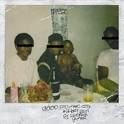

Main Menu
정규 앨범
DAMN.
힙합 아티스트 켄드릭 라마의 4번째 정규앨범.
발매 전부터 The Heart part.4 등으로 대중의 이목을 집중시켰으며, 앨범 발매를 앞두고 본인의 SNS로 IV라는 의미심장한 멘션을 남겨 한동안 발매예정인 켄드릭의 신보 IV, NATION. 혹은 The heart 4등의 의미불명의 타이틀이 쏟아지기도 했다.
발매일은 2017년 4월 14일로, 출시일이 며칠 남지 않은 상태에서 앨범 제목이 DAMN.으로 확정되었다. 이후 무사히 발매. 총 14곡으로 이뤄져 있으며, 특이한 점은 'DAMN.'이라는 앨범의 제목에 걸맞게 (또 K-Dot이라는 본인의 랩 네임답게) 트랙들의 제목이 모두 '대문자+마침표(.)' 형식으로 이뤄져있다.
또한, 그동안 트랩 같은 일렉트로니카적 요소를 사용하지 않던 전작들과는 다르게 이런 요소들을 상당히 적극적으로 사용하고 있다. 물론 켄드릭답게 평범하게 사용하지 않고, 대부분의 요소들에 상당한 변칙이 가해져 있다.
또한 피처링에 참여한 가수로는 Rihanna, 그룹 U2, Zacari.로 총 3명으로 이전보다 굉장히 적은 수가 참여했다. 랩 피쳐링이 없다는 점 또한 주목할 점이다. 물론, Rihanna와 U2라는 거물급 가수들이니 실망스럽지 않을 것이다. 또한 Zacari.라는 신인 가수가 10번 트랙 'LOVE.'에 피처링 했다는 점도 주목 할 만하다. Zacari.는 목소리가 매우 좋다는 평이 우세.
Rihanna와 함께한 3번째 싱글 LOYALTY.는 Bruno Mars의 24K Magic을 샘플링한 곡이다.
메타크리틱 점수는 현재 95점으로 전작과 1점 차이가 나는 점수이다. 2017년 5월 24일 기준 판매량은 약 70만장 이상.
2017년 7월 24일 기준으로 더블 플래티넘(200만)을 돌파했다.
발매 전부터 The Heart part.4 등으로 대중의 이목을 집중시켰으며, 앨범 발매를 앞두고 본인의 SNS로 IV라는 의미심장한 멘션을 남겨 한동안 발매예정인 켄드릭의 신보 IV, NATION. 혹은 The heart 4등의 의미불명의 타이틀이 쏟아지기도 했다.
발매일은 2017년 4월 14일로, 출시일이 며칠 남지 않은 상태에서 앨범 제목이 DAMN.으로 확정되었다. 이후 무사히 발매. 총 14곡으로 이뤄져 있으며, 특이한 점은 'DAMN.'이라는 앨범의 제목에 걸맞게 (또 K-Dot이라는 본인의 랩 네임답게) 트랙들의 제목이 모두 '대문자+마침표(.)' 형식으로 이뤄져있다.
또한, 그동안 트랩 같은 일렉트로니카적 요소를 사용하지 않던 전작들과는 다르게 이런 요소들을 상당히 적극적으로 사용하고 있다. 물론 켄드릭답게 평범하게 사용하지 않고, 대부분의 요소들에 상당한 변칙이 가해져 있다.
또한 피처링에 참여한 가수로는 Rihanna, 그룹 U2, Zacari.로 총 3명으로 이전보다 굉장히 적은 수가 참여했다. 랩 피쳐링이 없다는 점 또한 주목할 점이다. 물론, Rihanna와 U2라는 거물급 가수들이니 실망스럽지 않을 것이다. 또한 Zacari.라는 신인 가수가 10번 트랙 'LOVE.'에 피처링 했다는 점도 주목 할 만하다. Zacari.는 목소리가 매우 좋다는 평이 우세.
Rihanna와 함께한 3번째 싱글 LOYALTY.는 Bruno Mars의 24K Magic을 샘플링한 곡이다.
메타크리틱 점수는 현재 95점으로 전작과 1점 차이가 나는 점수이다. 2017년 5월 24일 기준 판매량은 약 70만장 이상.
2017년 7월 24일 기준으로 더블 플래티넘(200만)을 돌파했다.
To Pimp A Butterfly
2015년 발매된 켄드릭 라마의 세 번째 스튜디오 앨범이다. 앨범 제목은 하퍼 리의 앵무새 죽이기(To Kill a Mockingbird)에서 따 왔으며, 막 날개를 펴서 날아오르려는 흑인을 나비로 상징한다.
2집 good kid, m.A.A.d city를 통해 얻은 유명 래퍼로서의 삶과 그에 따른 개인적 고뇌, 전작에서부터 이어지는 컴튼에서의 경험, 벗어나기 힘든 흑인에 대한 폭력과 착취의 굴레에 대한 사회적 메시지와 종교적 자아성찰을 담은 앨범.
상업적으로는 미국에서 80만장, 월드와이드로 138만장. 전작에 비하면 부진한 것 같지만 해가 지날수록 음반시장이 줄어드는 추세이기 때문에 적다고 보기는 힘들다.
판매량을 떠나 사회적으로는 그래미에서 보여준 흑인 노예 퍼포먼스, Black Lives Matter등의 운동과 맞물려 큰 파장을 일으켰다.
이 앨범을 내고 켄드릭은 버락 오바마를 직접 면담했을 정도.메타크리틱 점수 96점이라는 엄청난 점수를 얻고 평론가들에게서 찬사를 이끌어냈다.
앨범에는 플라잉 로터스, 닥터 드레, 퍼렐 윌리엄스, Thundercat, 테라스 마틴, 로버트 글래스퍼, 카마시 워싱턴 등이 프로듀서로 참가했고 Bilal, Anna Wise, Ronald Isley, Snoop Dogg, James Fauntleroy, Rapsody등이 피처링으로 참여했다.
2집 good kid, m.A.A.d city를 통해 얻은 유명 래퍼로서의 삶과 그에 따른 개인적 고뇌, 전작에서부터 이어지는 컴튼에서의 경험, 벗어나기 힘든 흑인에 대한 폭력과 착취의 굴레에 대한 사회적 메시지와 종교적 자아성찰을 담은 앨범.
상업적으로는 미국에서 80만장, 월드와이드로 138만장. 전작에 비하면 부진한 것 같지만 해가 지날수록 음반시장이 줄어드는 추세이기 때문에 적다고 보기는 힘들다.
판매량을 떠나 사회적으로는 그래미에서 보여준 흑인 노예 퍼포먼스, Black Lives Matter등의 운동과 맞물려 큰 파장을 일으켰다.
이 앨범을 내고 켄드릭은 버락 오바마를 직접 면담했을 정도.메타크리틱 점수 96점이라는 엄청난 점수를 얻고 평론가들에게서 찬사를 이끌어냈다.
앨범에는 플라잉 로터스, 닥터 드레, 퍼렐 윌리엄스, Thundercat, 테라스 마틴, 로버트 글래스퍼, 카마시 워싱턴 등이 프로듀서로 참가했고 Bilal, Anna Wise, Ronald Isley, Snoop Dogg, James Fauntleroy, Rapsody등이 피처링으로 참여했다.
Good Kid, m.A.A.d City

2012년 10월 22일 발매되었으며 발매와 동시에 많은 매체와 대중으로부터 큰 호평을 받았다.
2015년 기준으로 미국에서만 140만장 이상 판매되었다. 켄드릭 라마 본인이 자라온 콤프턴에서의 암울한 생활을 바탕으로 한 자전적인 앨범이며, 인트로와 아웃트로의 스킷을 잘 사용하여 트랙 간의 연계를 살리고 하나의 문학으로 탄생시켰다.
앨범 재킷 이미지는 어린 켄드릭과 삼촌 두 명, 할아버지와 함께 찍은 사진을 쓴 것으로 켄드릭을 제외하고는 전부 눈이 가려져 있다.
피치포크 선정 2010년대 200대 명반에 18위로 선정됐다.
2015년 기준으로 미국에서만 140만장 이상 판매되었다. 켄드릭 라마 본인이 자라온 콤프턴에서의 암울한 생활을 바탕으로 한 자전적인 앨범이며, 인트로와 아웃트로의 스킷을 잘 사용하여 트랙 간의 연계를 살리고 하나의 문학으로 탄생시켰다.
앨범 재킷 이미지는 어린 켄드릭과 삼촌 두 명, 할아버지와 함께 찍은 사진을 쓴 것으로 켄드릭을 제외하고는 전부 눈이 가려져 있다.
피치포크 선정 2010년대 200대 명반에 18위로 선정됐다.
Section.80

2011년 발매된 켄드릭 라마의 정규 데뷔 앨범이다.
긍정적인 평가를 받았다. 빌보드 200 차트에서 113위에 오르기도 했다.
긍정적인 평가를 받았다. 빌보드 200 차트에서 113위에 오르기도 했다.
COPYRIGHT © 2020 TOP DAWG ENT.